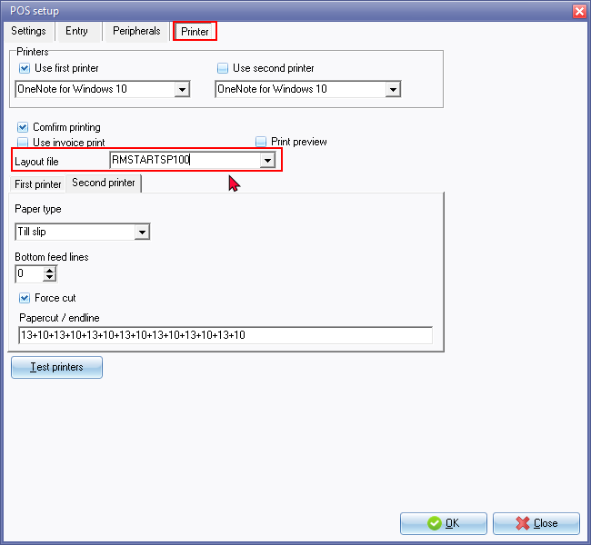

Documents setup - POS layout
Changing the Layout File for Point-of-Sale (POS) Documents
The default setting in the "Point-of-sale layout file" field on the "Documents setup" screen is "POS -STARTSP100," a till slip document layout file. To select a different layout file from the default document layout files included in the osFinancials installation or your own if you have created one, the document layout will be printed in that format.
|
|
When you alter the default Point-of-Sale (POS) layout file (or any other selected layout file), the changes will also impact documents generated with specific prefixes in various scenarios:
|

Available document layout files for Point-of-Sales invoices
The following document layout files are available for Point-of-Sales invoices:
- POS-STARTSP100 - (TRN_906183) - Prints on Till slip printers.
- POS 1 - (TRN_906184)
- POS 2 - (TRN_906185)
Options to select a point-of-sale document layout file
To configure the layout files for point-of-sale documents, you can choose from the following options:
- Documents setup - Setup menu on the Setup ribbon.

- Point-of-Sale - Printer tab - Setup menu on the Setup ribbon.

On whichever option you choose, the layout file will be updated in both screens